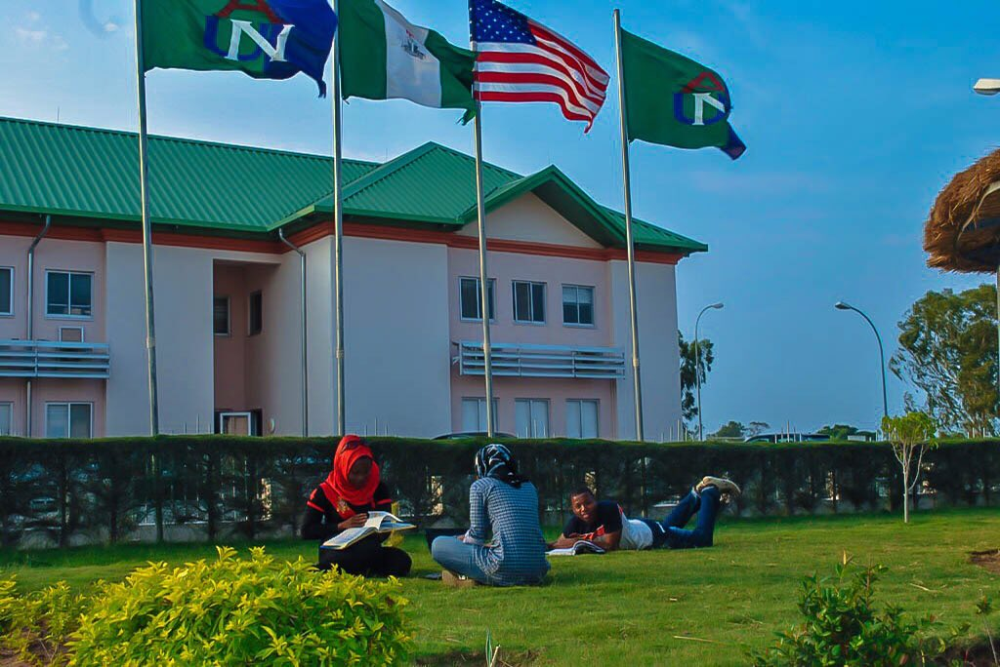

About Me
Here's all you need to know about me
Employment history
Although I have not held formal employment yet, I’ve gained valuable experience through my volunteer work. In 2014, I volunteered during an IT-focused summer program, helping organize events for the Literacy Integration and Formal Education Foundation. Through those efforts, we raised over ₦100,000 to support underprivileged youth. I also volunteered at SHELL an oil company in Nigera, working in the IT department in an entrepreneurship role. That experience opened my eyes to the vast opportunities within the tech world and strengthened my interest in pursuing programming professionally.
SCHOOLING
- Vine International School — Port Harcourt, Nigeria
- Chrisland College Idimu
- Chrisland High School Ikeja
- American University of Nigeria 
- St. Clair College — Windsor, Ontario Currently studying Computer Programming, working toward an Ontario College Diploma.
HOBBIES
- Books: Knowledge is power, and books build a strong foundation.
- Philosophy & Theories: I enjoy exploring ideas and forming my own theories.
- Gaming: A healthy body is a wealthy body.
- Working Out:
- A healthy body is a wealthy body.


Skills
-
Problem Solving Strong analytical and creative-thinking skills
- Organizational skills Skilled at prioritizing tasks, meeting deadlines, and keeping detailed records
- Technical Proficiency Experienced with MS Office (Word, Excel, PowerPoint) and currently learning PHP, Java, HTML, CSS, Python, and JavaScript.
- Team Collaboration Able to work effectively in diverse groups.
- Research and analysis Skilled in in-depth research, trend identification, and presenting insights.
- Video Editing Self-taught, continuously improving.